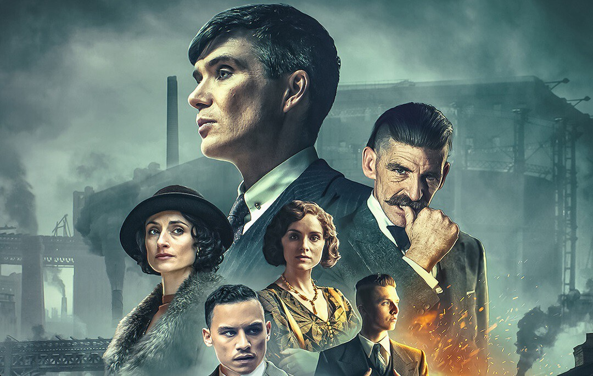

Temporadas

Temporada 1
En la primera temporada, conocemos a la familia Shelby y su ascenso al poder en los años 20, con la figura central de Thomas Shelby liderando el imperio de apuestas ilegales.

Temporada 2
La familia Shelby enfrenta nuevos desafíos, expandiendo su imperio más allá de Birmingham mientras lidian con poderosas figuras criminales y gobiernos.

Temporada 3
La familia se enfrenta a nuevos enemigos y alianzas, mientras buscan consolidar su control sobre las industrias ilegales de Europa.